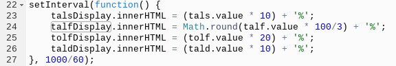
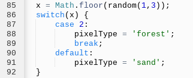
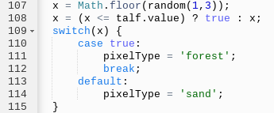

Interactive Art - How To
Henrik Evers
What I Created
YEEETI created a way to modify how a system I previously created procedurally generates 'islands' onto an 'ocean'.
How It Works
YEEETThis How To page only explains setting the parameters and any modifications to the generator, and assumes you have read the How To for the generator. It can be found here.
Display
YEEETThe first change is that the part of the generator that actually creates the map is wrapped up in a function called everything();. This makes it so that the generation can be run at will, instead of as soon as the page loads. This allows for parameters to be set before generation.
YEEETNext, to be able to set the parameters, there are several 〈input〉 and 〈select〉 tags. Next to the sliders there is a changing value representing the percentage chance of the action stated above the slider. Because there are so many sliders, I used a simple system for naming them. If the top and left cells are sand, then it would be abbreviated to TALS, for (T)op (A)nd (L)eft (S)and. Then, using these assignments so I knew which was which, I created a setInterval that runs at 60 times per second, or every 1000/60 milliseconds.

YEEETThe display for each value (the percentage number) is updated depending on the value of the slider. For example, talsDisplay is the percentage value next to the slider for Top and Left are Sand. The contents of it are being set to be equal to the value of the slider * 10, plus a percentage sign. This is because each increment from the slider equals a 10% higher chance in the generator. For TALF, however, each increment is 100%/3, or 33.33333%.
Changed Generation
YEEETThe previous generation algorithm had baked in generation chances, so I had to change it to use the value of the slider in its calculations. This is the original generator from TALF:

YEEETIt sets variable x to equal a random integer from 1 to 3 (inclusive) using my random function. Then, if x == 2 is found to be true, the cell would be a forest. Otherwise, it would be sand. The new generator is quite different, as is needed.

YEEETFirst, it sets x to equal a random from 1 to 3, inclusive, similar to the first time. I used a ternary operator after so that if x <= talf.value, it sets x to true. Otherwise, x is unchanged. Then, in the switch statement, if x == true, then the block becomes forest. Otherwise, it is sand. So, if talf.value is 1 (the default), only x = 1 would make the pixel a forest. However, if talf.value is changed to 2, x = 2 would also make the pixel a forest.
How this Project Changed My Connection and Understanding of What it Means to Interact with Something
YEEETThis project allowed me to learn how to use ternary operators, and made me more proficient in JS DOM, which I already had some experience in. I learned about the select tag, and more types that can be used for input tags.
What I Would Change if I Had More Time
YEEETIf I had more time, I would have increased the amount of parameters that could be changed, and would have polished the generation so that it would produce more cohesive products.